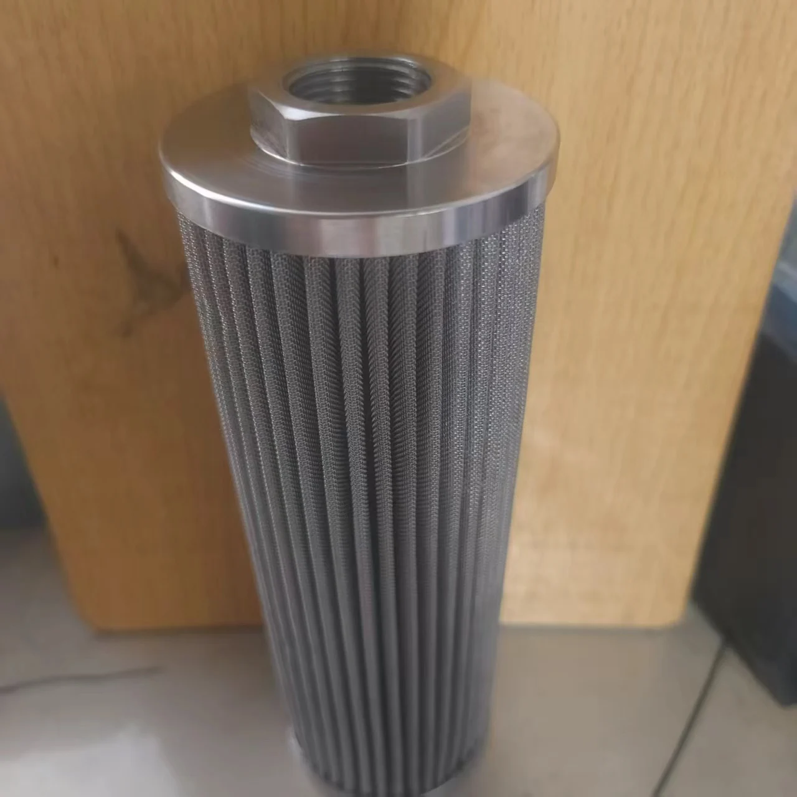
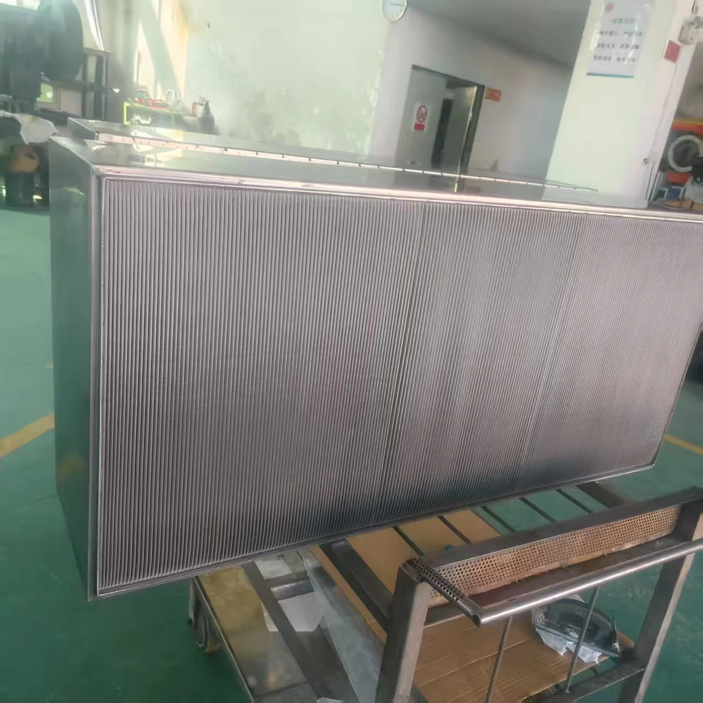
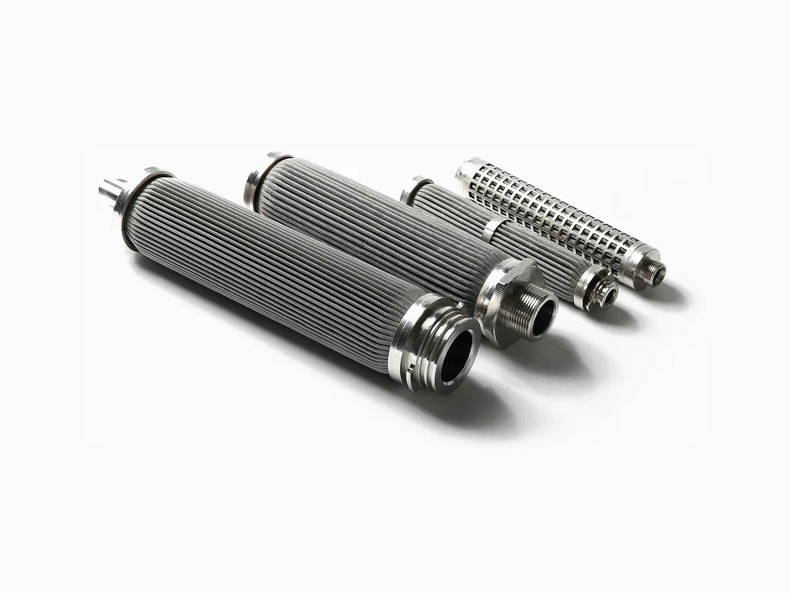
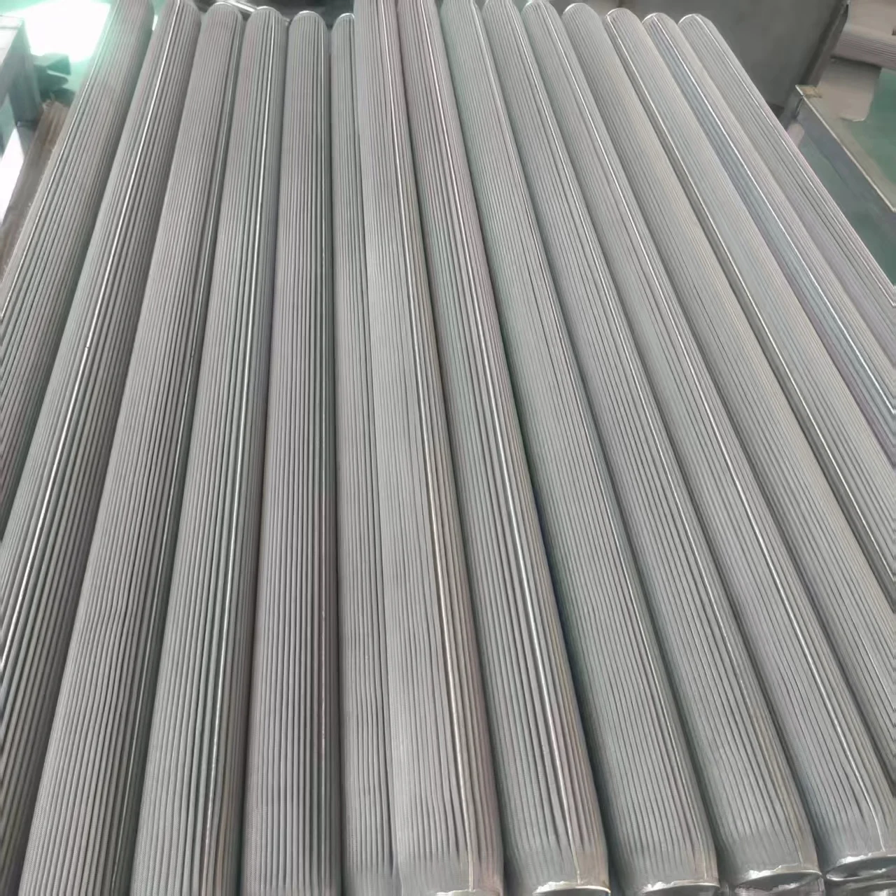
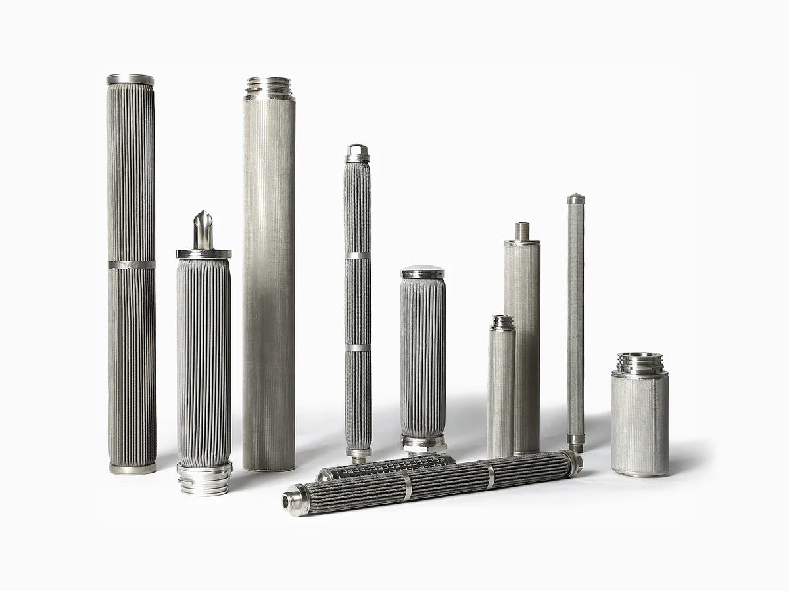
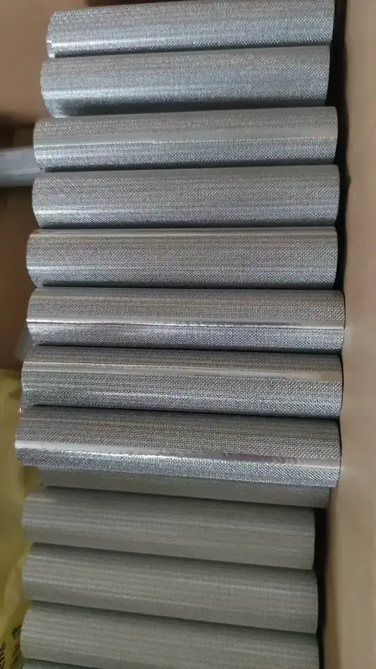
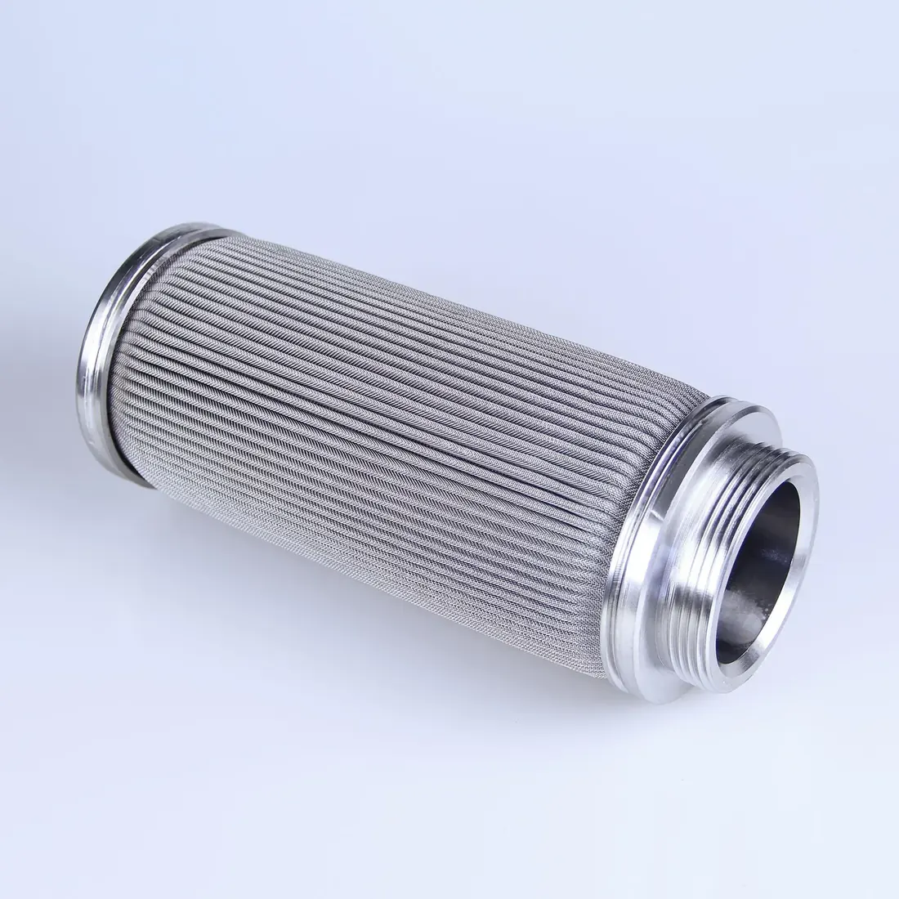
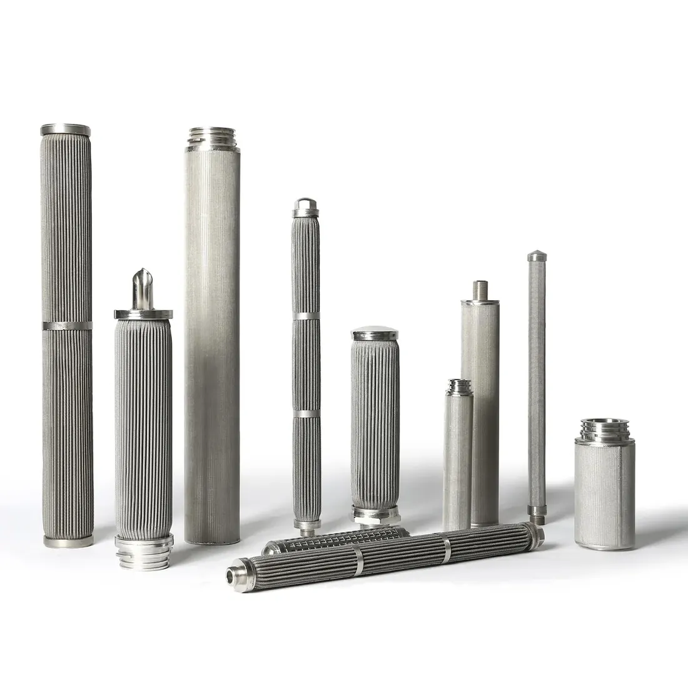
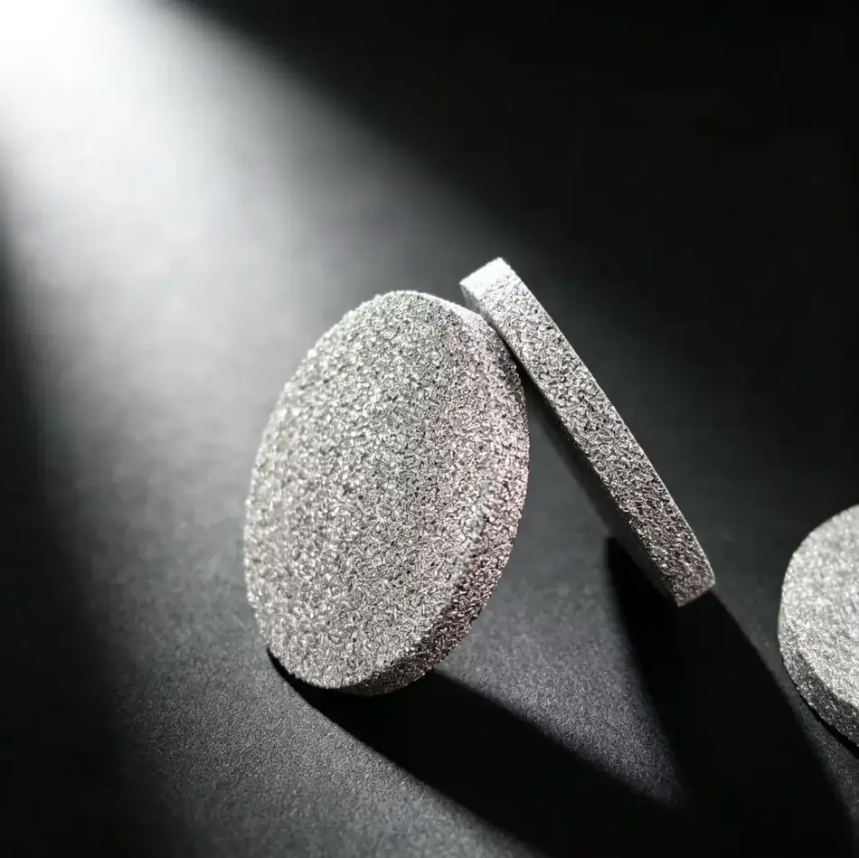
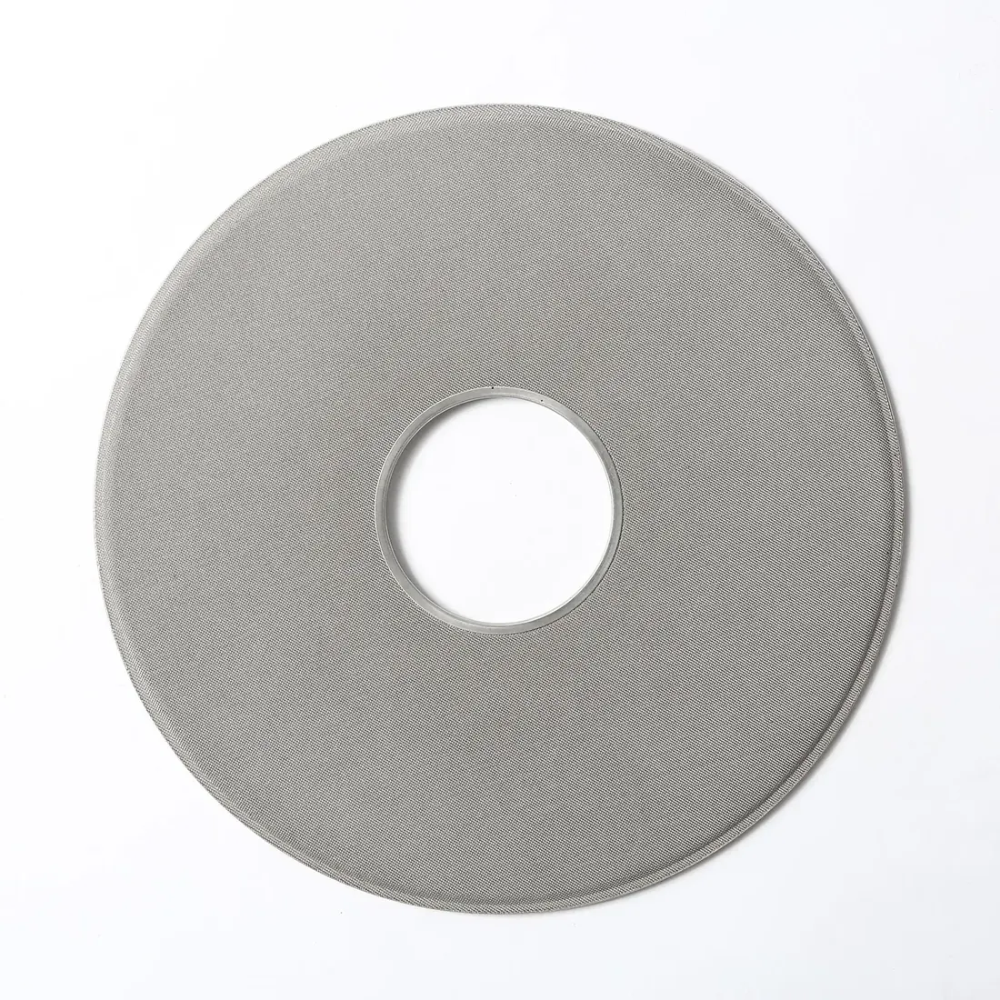

Hydraulic filter elements
Made to drawing in our machining and filter element workshop — media cutting, pleating, forming, bonding, end-cap assembly and pressure testing on one line.
Ask about this productHydraulic, dust collection, air compressor and industrial fluid filter elements made to drawing, plus pleated metal fiber cartridges built from our own media — with filter cores and metal parts machined in the same workshop.

Made to drawing in our machining and filter element workshop — media cutting, pleating, forming, bonding, end-cap assembly and pressure testing on one line.
Ask about this product
Made to drawing in our machining and filter element workshop — media cutting, pleating, forming, bonding, end-cap assembly and pressure testing on one line.
Ask about this product
Made to drawing in our machining and filter element workshop — media cutting, pleating, forming, bonding, end-cap assembly and pressure testing on one line.
Ask about this product
Made to drawing in our machining and filter element workshop — media cutting, pleating, forming, bonding, end-cap assembly and pressure testing on one line.
Ask about this product
Pleated cartridges built from our own sintered metal fiber felt with support and protective mesh, sized to your housing.
Ask about this product
Turning, milling, drilling, grinding and CNC machining of filter cores and other metal components, in carbon steel and stainless steel, with dimensional and geometric tolerance control.
Ask about this productAn element is a system: the felt sets the rating and the dirt-holding capacity, the mesh sets the strength, and the end fittings decide whether it drops into your housing. Because we make the media, the support mesh assembly and the element, those three decisions are taken together rather than passed between suppliers.
| Item | Value |
|---|---|
| Pleated cartridge diameter | Φ35–60 mm |
| Pleated cartridge length | 425–1250 mm |
| Filtration rating | 5–60 µm |
| Maximum working pressure | 30 MPa |
| Sintered mesh elements | 2–100 µm |
| Typical construction | 316L sintered felt filter layer; 304 inner support mesh; 304 outer protective mesh; perforated core and end fittings in 304 |
| High-temperature filter bags | Rated 350–1000 °C, porosity above 90% |
| Other elements | Precision filter housings, basket strainers, pleated, wound and melt-blown elements, mist eliminators, ceramic membranes |




The team that makes this product line answers directly — for selection, samples and quotations.
Temperature, medium, pressure, filtration rating, resistance or porosity — give us the numbers you work with and our engineers will recommend a configuration, quote it and arrange samples for your own testing.